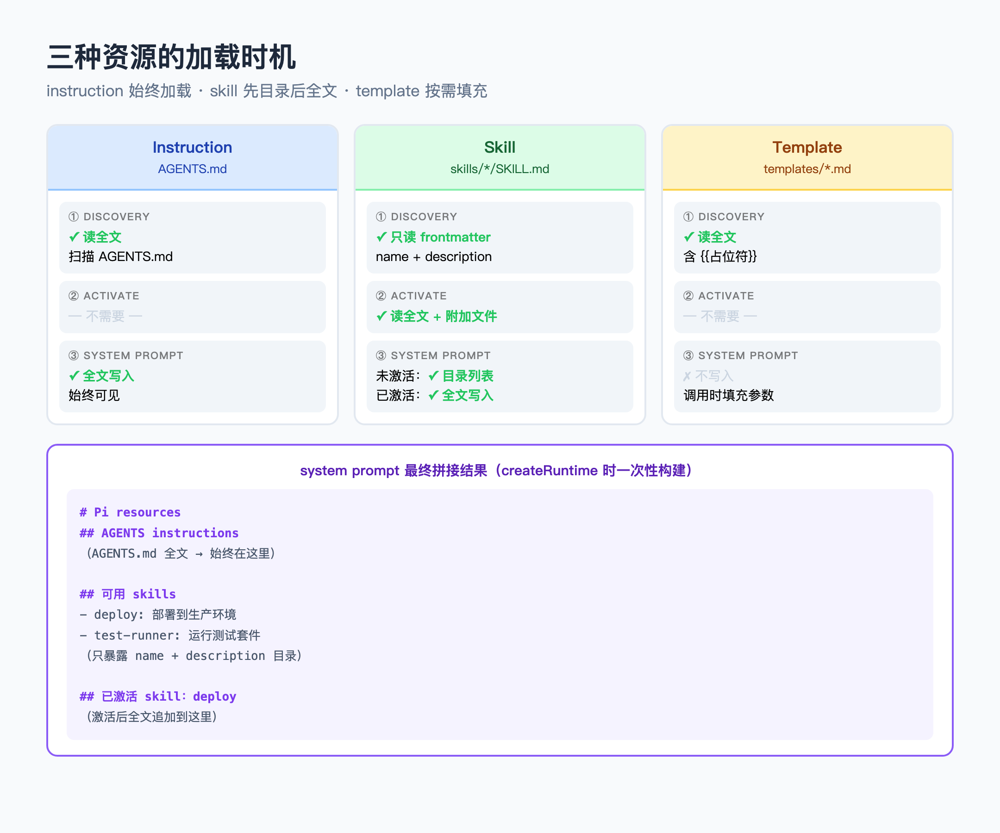
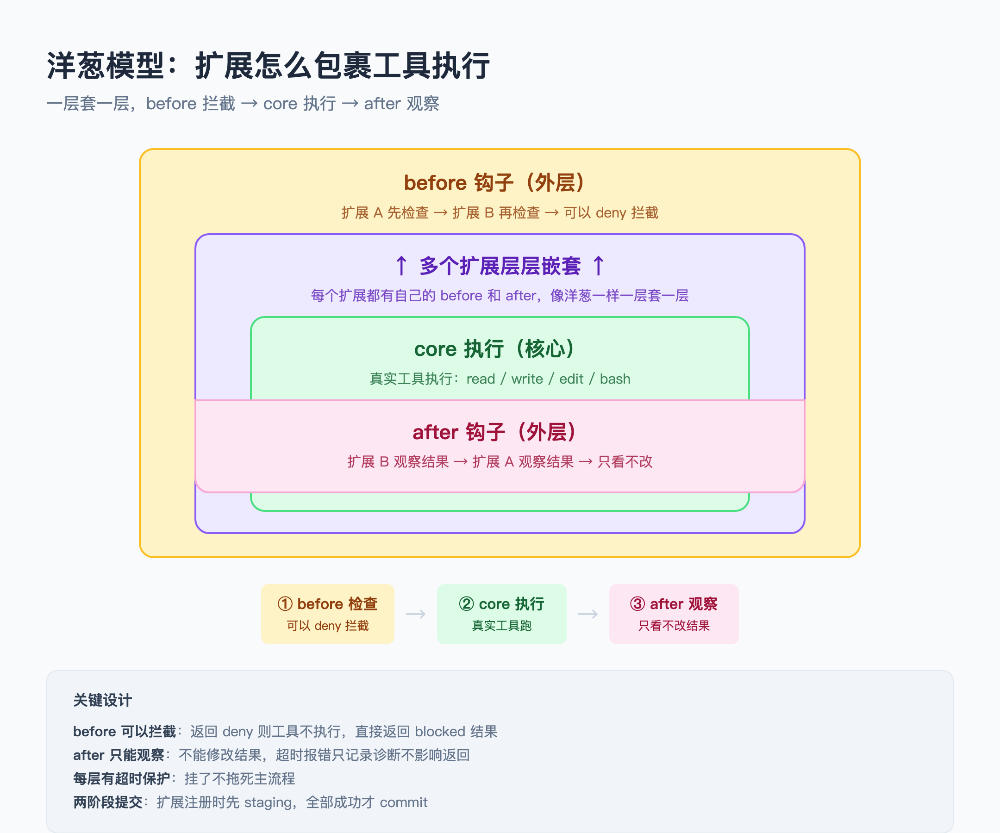
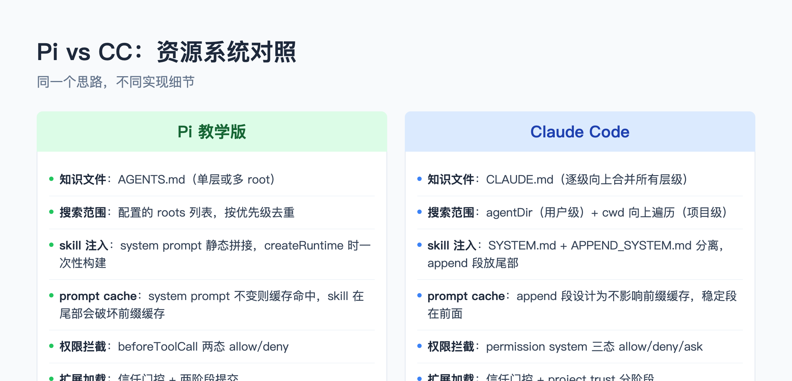

大家好我是郑同学。你用 Pi 的时候有没有注意到一个细节：在项目根目录放一个 AGENTS.md，它就自动知道项目规矩——不用每次手动交代。在 skills/ 目录放一个 SKILL.md，它就会在需要时调用对应技能。
这不是魔法。这是 resource-loader.ts 和 skills.ts 做的事——从文件系统扫描 markdown 文件，解析 frontmatter，把 skill 目录写进 system prompt，正文等模型用 read 工具按需读取。
这一篇拆 Pi 的资源与扩展系统。
● ● ●
Pi 扫描文件系统时，把找到的资源分三种类型：
// skills.ts:74-81（Skill 类型——注意没有 body 字段）
export interface Skill {
name: string;
description: string;
filePath: string;
baseDir: string;
sourceInfo: SourceInfo;
disableModelInvocation: boolean;
}
Instruction 对应项目根目录的 AGENTS.md。Pi 启动时自动读取，内容直接拼进 system prompt 的
Skill 对应 skills/ 下的子目录，每个目录里有一个 SKILL.md。加载时只解析 frontmatter（name + description），不读正文。Skill 接口里没有 body/content 字段——skill 正文从头到尾不在内存里。
Template 对应 templates/ 下的 markdown 文件，body 里有 {{变量名}} 占位符，调用时填充参数。
三种类型的加载时机不同：instruction 始终加载，skill 延迟加载，template 按需填充。

三种资源加载时机图解
● ● ●
Pi 的资源搜索区分用户级别和项目级别。但两种资源的行为不一样。
AGENTS.md 是叠加，不是覆盖。用户级（~/.pi/AGENTS.md）和项目级（当前目录的 AGENTS.md）全部加载，全部拼进 system prompt。源码里 loadProjectContextFiles 先读用户级，再从当前目录逐级向上遍历，所有找到的文件按顺序拼到一起。
// resource-loader.ts:85-119（核心骨架）
function loadProjectContextFiles(options) {
const contextFiles = [];
// 1. 先读用户级 AGENTS.md
const globalContext = loadContextFileFromDir(resolvedAgentDir);
if (globalContext) contextFiles.push(globalContext);
// 2. 从 cwd 逐级向上，所有 AGENTS.md 都收进来
let currentDir = resolvedCwd;
while (true) {
const ctx = loadContextFileFromDir(currentDir);
if (ctx) ancestorContextFiles.unshift(ctx);
if (parentDir === currentDir) break;
currentDir = parentDir;
}
// 3. 全部叠加返回
contextFiles.push(...ancestorContextFiles);
return contextFiles; // ← 是数组，不是单个
}
你在项目目录写的 AGENTS.md 不会覆盖用户级的，两份内容会同时出现在 system prompt 里。
Skills 同名冲突，先加载的获胜。用户级 skill 先加载（agentDir/skills/），项目级后加载（cwd/.pi/skills/）。addSkills 里用 Map 按 name 去重，已存在的 key 不覆盖，只报 collision 诊断。
// skills.ts:399-427（核心骨架）
function addSkills(result) {
for (const skill of result.skills) {
const existing = skillMap.get(skill.name);
if (existing) {
// 同名冲突：不覆盖，只报诊断
collisionDiagnostics.push({
type: "collision",
message: `name "${skill.name}" collision`,
collision: { winnerPath: existing.filePath, loserPath: skill.filePath },
});
} else {
skillMap.set(skill.name, skill); // ← 第一个注册的获胜
}
}
}
// 加载顺序：用户级先 → 项目级后
addSkills(loadSkillsFromDirInternal(join(agentDir, "skills"), "user"));
addSkills(loadSkillsFromDirInternal(join(cwd, ".pi", "skills"), "project"));
项目级同名 skill 不会覆盖用户级的。如果两边都有一个叫 deploy 的 skill，用户级的获胜，项目级的被标记为 collision 但不生效。想在项目级覆盖用户级 skill，需要改名字。
● ● ●
扫描 skill 目录时做路径安全检查，防止符号链接逃逸：
// resource-loader.ts:98-118（核心骨架）
function within(root: string, candidate: string): boolean {
const relative = path.relative(root, candidate);
// 不允许 .. 开头（逃出 root）或绝对路径
return relative === "" ||
(relative !== ".." && !relative.startsWith(".." + path.sep));
}
realpath + within 双重检查。先 realpath() 解析符号链接到真实路径，再检查结果是否在 root 目录内。恶意用户不能通过符号链接让 AI 读取 root 外的文件。
● ● ●
skill 正文从头到尾不进 system prompt。模型需要时自己用 read 工具去读。
buildSystemPrompt 把 skills 交给 formatSkillsForPrompt，写入 system prompt 的只有 XML 目录：
// skills.ts:335-361（核心骨架）
export function formatSkillsForPrompt(skills: Skill[]): string {
const lines = [
"The following skills provide specialized instructions.",
// 关键这句：告诉模型用 read 工具去读
"Use the read tool to load a skill's file when the task matches.",
"<available_skills>",
];
for (const skill of skills) {
lines.push(" <skill>");
lines.push(` <name>${skill.name}</name>`);
lines.push(` <description>${skill.description}</description>`);
// 只写文件路径，不写正文
lines.push(` <location>${skill.filePath}</location>`);
lines.push(" </skill>");
}
lines.push("</available_skills>");
return lines.join("\n");
}
模型看到的是目录（name + description + 文件路径），不是正文。需要用某个 skill 时，模型自己调 read 工具去读
因为 skill 正文不进 system prompt，只有 name + description + filePath 进去——这些在运行期间不会变。system prompt 前缀稳定，cache 天然命中。
skill 正文通过 read 工具按需进入用户会话消息。用户会话消息不在 cache 前缀里，所以不影响缓存。
CC 的机制完全一致：CC 也是把 skill 目录写进 system prompt，正文让模型用 read 按需读取。CC 额外有 SYSTEM.md（稳定段）和 APPEND_SYSTEM.md（追加段）的分离，追加段放尾部不破坏前缀缓存。
● ● ●
Pi 的扩展系统（Extension Host）。为什么叫洋葱模型？ 因为扩展一层一层包在真实执行器外面，像洋葱一样——before 钩子在外层，core 执行在中间，after 钩子也在外层。

洋葱模型图解：before拦截→core执行→after观察，多层嵌套
扩展可以注册 beforeToolCall 和 afterToolResult 钩子。工具执行时，先过所有 before 钩子（可以 deny），再执行真实工具，最后过所有 after 钩子（只能观察）。
// resources.ts:790-802（核心骨架）
wrapExecutor(coreExecutor: ToolExecutor): ToolExecutor {
return async (sourceCall, context = {}) => {
const call = structuredClone(sourceCall);
// 第一层：before 钩子（可以拦截）
const blocked = await this.before(call);
if (blocked) return structuredClone(blocked);
// 第二层：真实工具执行
const coreResult = structuredClone(
await coreExecutor(structuredClone(call), context));
// 第三层：after 钩子（只能观察）
await this.after(coreResult);
return structuredClone(coreResult);
};
}
每层都是独立的一圈——before 在外层先跑，core 在中间执行，after 在外层后跑。如果有多个扩展，它们层层嵌套，每个扩展的 before/after 包裹着下一层。
每个钩子有超时保护——挂了不拖死主流程。before 钩子超时或报错时，工具调用被标记为 blocked，不会执行。after 钩子超时或报错时，只记录诊断信息，不影响已返回的结果。
扩展加载有信任门控 + 两阶段提交：
// resources.ts:829-861（核心骨架）
export async function loadExtension(source, options) {
const trusted = await options.isTrusted(source);
if (!trusted) return { id: source.id, status: "skipped_untrusted" };
// factory 先往 staging context 注册
const staged = host.stage(source.id);
await factory(staged.context);
// 全部成功后才一次性 commit 到 host
staged.commit();
return { id: source.id, status: "active" };
}
factory 函数先往 staging context 注册 tools 和 hooks，全部成功后才一次性 commit。如果 factory 抛异常，已注册的内容不会残留。
● ● ●
CC 的资源系统在 resource-loader.ts 和 permissions.ts 里。

Pi vs CC 资源系统对照图
两边核心思路一样：文件系统扫描 + 延迟加载 + 注入 prompt。差别在 CC 的层级叠加更细（逐级向上遍历合并所有 CLAUDE.md），prompt cache 设计更明确（SYSTEM.md + APPEND_SYSTEM.md 分离），权限粒度更细（三态 allow/deny/ask）。
● ● ●
口诀：扫文件分三类，skill 目录进 prompt 正文按需读，根优先去重，钩子套洋葱。